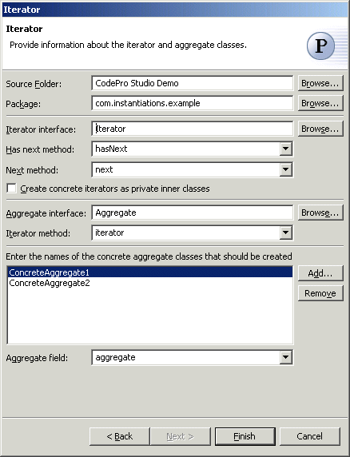

Iterator Pattern
Also known as: Cursor
The  Iterator Pattern provides a way to access the elements of an aggregate
object sequentially without exposing its underlying representation. An
aggregate object such as a list should give you a way to access its elements
without exposing its internal structure. Moreover, you might want to
traverse the list in different ways, depending on what you want to
accomplish. But you probably don't want to bloat the List interface with
operations for different traversals, even if you could anticipate the ones
you will need. You might also need to have more than one traversal pending
on the same list.
Iterator Pattern provides a way to access the elements of an aggregate
object sequentially without exposing its underlying representation. An
aggregate object such as a list should give you a way to access its elements
without exposing its internal structure. Moreover, you might want to
traverse the list in different ways, depending on what you want to
accomplish. But you probably don't want to bloat the List interface with
operations for different traversals, even if you could anticipate the ones
you will need. You might also need to have more than one traversal pending
on the same list.
The Iterator pattern lets you do all this. The key idea in this pattern is to take the responsibility for access and traversal out of the list object and put it into an iterator object. The Iterator class defines an interface for accessing the list's elements. An iterator object is responsible for keeping track of the current element; that is, it knows which elements have been traversed already.
Wizard

| Option | Description | Default |
| Source folder | Enter a source folder for the new class. Either type a valid source folder path or click Browse to select a source folder via a dialog. | The source folder of the element that was selected when the wizard was started. |
| Package | Enter a package to contain the new class. Either type a valid package name or click Browse to select a package via a dialog. | The package of the element that was selected when the wizard has been started. |
| Iterator interface | Type or click Browse to select an iterator interface class | <Iterator> |
| Has next method | Type or select the name of the method that will answer whether there is another element | <hasNext> |
| Next method | Type or select the name of the method that will answer the next element | <next> |
| Create concrete iterators as private inner classes | Determines whether the generated concrete iterators will be created as private inner classes | <false> |
| Aggregate interface | Type or click Browse to select an aggregate interface class | <Aggregate> |
| Iterator method | Type or select the name of the method that will return the iterator instance | <iterator> |
| Concrete aggregate classes | Click Add to enter names of the concrete aggregate classes that should be created. | <blank> |
| Aggregate field | Type or select the name of the field that will hold the aggregate instance in the iterator | <aggregate> |
Applicability
Use the Iterator pattern
- to access an aggregate object's contents without exposing its internal representation.
- to support multiple traversals of aggregate objects.
- to provide a uniform interface for traversing different aggregate structures (that is, to support polymorphic iteration)..
Additional Resources
http://c2.com/cgi/wiki?IteratorPattern
http://www.wikipedia.org/wiki/Iterator_pattern